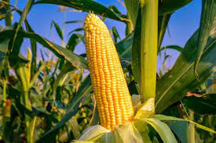
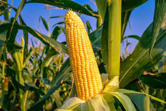

Alface: Originária do Mediterrâneo. Contém cerca de 1,5g de proteína por 100g. Pode ser plantada durante a primavera e o outono, a uma profundidade de 0,5cm, em solo bem drenado. A irrigação deve ser feita regularmente para manter o solo úmido.
Couve: Originária do Mediterrâneo. Possui cerca de 2,9g de proteína por 100g. Pode ser plantada durante o outono e a primavera, a uma profundidade de 1cm, em solo rico em matéria orgânica. A irrigação deve ser feita mantendo o solo ligeiramente úmido.
Espinafre: Originário do Sudoeste da Ásia. Contém aproximadamente 2,9g de proteína por 100g. Pode ser plantado durante o outono e a primavera, a uma profundidade de 1cm, em solo fértil e bem drenado. A irrigação adequada é fundamental para manter o solo úmido.
Brócolis: Originário da Europa Ocidental e Mediterrâneo Oriental. Possui cerca de 2,8g de proteína por 100g. Pode ser plantado no início da primavera ou no final do verão, a uma profundidade de 1cm, em solo rico em matéria orgânica. A irrigação deve ser realizada regularmente para manter o solo úmido.
Cenoura: Originária do Afeganistão. Contém aproximadamente 0,9g de proteína por 100g. Pode ser plantada durante a primavera e o outono, a uma profundidade de 1cm, em solo leve e arenoso. A irrigação pode ser realizada quando o solo estiver seco, mas evitando o encharcamento.
Abobrinha: Originária do México. Possui cerca de 1,2g de proteína por 100g. Pode ser plantada na primavera ou no início do verão, a uma profundidade de 3cm, em solo fértil e bem drenado. A irrigação deve ser feita regularmente, evitando que o solo fique completamente seco.
 Pimentão: Originário das Américas. Contém aproximadamente 0,9g de proteína por 100g. Pode ser plantado durante a primavera, a uma profundidade de 1cm, em solo rico em matéria orgânica. A irrigação deve ser regular, mantendo o solo levemente úmido.
Pimentão: Originário das Américas. Contém aproximadamente 0,9g de proteína por 100g. Pode ser plantado durante a primavera, a uma profundidade de 1cm, em solo rico em matéria orgânica. A irrigação deve ser regular, mantendo o solo levemente úmido.
 Tomate: Originário das Américas. Possui cerca de 0,9g de proteína por 100g. Pode ser plantado durante a primavera, a uma profundidade de 1cm, em solo fértil, drenado e bem iluminado. A irrigação deve ser regular, evitando o encharcamento.
Pepino: Originário da Índia. Contém aproximadamente 0,7g de proteína por 100g. Pode ser plantado na primavera, a uma profundidade de 2cm, em solo fértil e rico em matéria orgânica. A irrigação deve ser regular para manter o solo levemente úmido.
Berinjela: Originária da Índia. Possui cerca de 0,9g de proteína por 100g. Pode ser plantada durante a primavera, a uma profundidade de 1cm, em solo fértil e bem drenado. A irrigação deve ser regular, evitando o encharcamento.
Abóbora: Originária da América do Sul. Contém aproximadamente 1g de proteína por 100g. Pode ser plantada no final da primavera ou início do verão, a uma profundidade de 3cm, em solo fértil e bem drenado. A irrigação deve ser realizada regularmente para manter o solo úmido.

Milho: Originário das Américas. Possui cerca de 3,2g de proteína por 100g. Pode ser plantado na primavera, a uma profundidade de 5cm, em solo rico em matéria orgânica e bem drenado. A irrigação deve ser regular, fornecendo uma quantidade adequada de água.
Tomate: Originário das Américas. Possui cerca de 0,9g de proteína por 100g. Pode ser plantado durante a primavera, a uma profundidade de 1cm, em solo fértil, drenado e bem iluminado. A irrigação deve ser regular, evitando o encharcamento.
Pepino: Originário da Índia. Contém aproximadamente 0,7g de proteína por 100g. Pode ser plantado na primavera, a uma profundidade de 2cm, em solo fértil e rico em matéria orgânica. A irrigação deve ser regular para manter o solo levemente úmido.
Berinjela: Originária da Índia. Possui cerca de 0,9g de proteína por 100g. Pode ser plantada durante a primavera, a uma profundidade de 1cm, em solo fértil e bem drenado. A irrigação deve ser regular, evitando o encharcamento.
Abóbora: Originária da América do Sul. Contém aproximadamente 1g de proteína por 100g. Pode ser plantada no final da primavera ou início do verão, a uma profundidade de 3cm, em solo fértil e bem drenado. A irrigação deve ser realizada regularmente para manter o solo úmido.

Milho: Originário das Américas. Possui cerca de 3,2g de proteína por 100g. Pode ser plantado na primavera, a uma profundidade de 5cm, em solo rico em matéria orgânica e bem drenado. A irrigação deve ser regular, fornecendo uma quantidade adequada de água.
 Feijão: Originário do México. Contém cerca de 21g de proteína por 100g. Pode ser plantado na primavera, a uma profundidade de 5cm, em solo fértil e bem drenado. A irrigação deve ser regular, mantendo o solo levemente úmido.
Feijão: Originário do México. Contém cerca de 21g de proteína por 100g. Pode ser plantado na primavera, a uma profundidade de 5cm, em solo fértil e bem drenado. A irrigação deve ser regular, mantendo o solo levemente úmido.